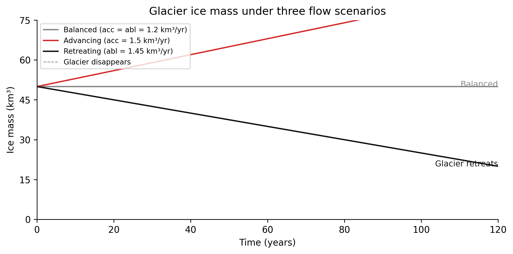

In 1972, analysts at MIT published a study called The Limits to Growth(Meadows et al. 1972). They built a computer model of the global economy and ran it forward. In scenario after scenario, the model produced the same result: economic growth continued for decades, then collapsed. The collapse was not gradual. It was sudden, and it was driven not by the moment the resource ran out, but by the long delay between when consumption began to outstrip production and when the system registered the problem.
The study was criticized intensely — and some of the criticisms were valid. But the underlying observation was not wrong. Real systems with stocks, flows, and delays regularly produce this behaviour: growth far past a sustainable level, followed by abrupt correction. The same pattern appears in fisheries, water tables, housing markets, soil carbon, and satellite constellation financing.
The reason is not that people are stupid or greedy. The reason is that the system structure generates the behaviour. And if you cannot see the system structure, you cannot predict or change the behaviour.
This chapter is about learning to see the structure.
2.2 Elements, connections, and function
A system is not just a collection of things. Most collections of things are not systems. The planets of the solar system arranged by mass — that is a list. The planets orbiting the Sun, governed by gravitational fields that couple their trajectories — that is a system.
Three things make a system:
Elements — the identifiable parts (planets, trees, dollars, people, data points)
Connections — the relationships between elements (gravity, competition, cash flows, social ties, training pipelines)
Function or purpose — what the system does, which may be different from what any element intends
Of these three, the connections are the most important and the hardest to see. Elements are visible. Purpose is often obvious. But connections — the flows of energy, matter, money, information, or influence between elements — are invisible unless you look for them.
And the purpose of a system is often not the stated purpose of the people who built it. A correctional system whose stated purpose is rehabilitation may have an actual function of containment. A data pipeline whose stated purpose is to serve clean data may have an actual function of propagating whatever the upstream source provides. Purpose is revealed by behaviour over time, not by mission statements.
2.3 Stocks and flows
The most important structural feature of a system is its stocks and flows.
A stock is an accumulation — the amount of something in the system at a point in time. It changes slowly. It has memory. You can measure it by looking at it right now: cubic kilometres of ice in a glacier, housing units in a city, dollars in a bank account, tonnes of carbon in the atmosphere, labelled examples in a training dataset, cubic metres of water in a reservoir.
A flow is a rate of change — the speed at which a stock is increasing or decreasing. It has no persistence. You cannot look at a flow directly; you can only infer it from how the stock changes over time: annual ice accumulation (precipitation minus ablation), housing completions and demolitions, daily bank deposits and withdrawals, CO₂ emissions and uptake, a dataset’s daily labelling rate and deprecation rate.
The fundamental relationship:
\text{stock at time } t + \Delta t = \text{stock at time } t + (\text{inflow} - \text{outflow}) \times \Delta t
where S is the stock. If you know how to read this — you already understand the mathematical spine of the whole book.
A note on calculus
You do not need to be fluent in differential equations to follow the reasoning in Chapters 1–3. The equation above is here so that readers who know it can see the connection. For those who do not, the verbal version is sufficient: the stock grows when inflows exceed outflows and shrinks when outflows exceed inflows. The derivative dS/dt is just the name for that rate of change.
If you want the mathematics in depth, Wayward House Maths Vol 5 covers differential calculus in full.
2.4 Drawing the system: stock-flow diagrams
The conventional representation of a stock-flow system is simple:
Rectangles for stocks
Arrows with a tap/valve symbol for flows (the tap controls the rate)
Circles for variables that influence flow rates (called “auxiliaries” or “converters”)
Plain arrows for information connections (not material flows)
A glacier in stock-flow notation:
flowchart LR
P([Precipitation\ninflow]) -->|accumulation\nkm³/yr| V1{Accumulation\nvalve}
V1 --> S[[Ice Mass\nkm³]]
S --> V2{Ablation\nvalve}
V2 -->|melt + calving\nkm³/yr| A([Ablation\noutflow])
T(Temperature) -.->|raises rate| V2
ELA(ELA elevation) -.->|lowers rate| V1
style S fill:#f5f5f5,stroke:#111111,stroke-width:2px
style V1 fill:#ffffff,stroke:#888888
style V2 fill:#ffffff,stroke:#888888
style T fill:#fff3f3,stroke:#d52a2a
style ELA fill:#fff3f3,stroke:#d52a2a
Figure 1.1. Glacier ice mass as a stock-flow system. Rectangles are stocks (accumulations). Diamonds are valves (flow regulators). Rounded rectangles are auxiliaries (variables that control flow rates). Dashed arrows carry information; solid arrows carry material flows. Temperature acts only through information — it does not flow into the glacier; it changes the rate at which ice leaves it.
This diagram says: ice mass accumulates from precipitation (inflow) and is depleted by ablation (outflow). The ablation rate depends on temperature — which is an information connection, not a flow of ice.
The stock has memory. Even if precipitation stops today, there is still ice. Even if temperature drops tomorrow, the ice does not immediately recover. The stock acts as a buffer between the flows.
This is the first important insight about stocks: they create delays. They accumulate the history of the system. This is why glaciers are both lagging indicators of past climate (they are responding to warming from decades ago) and early warning systems (their current state tells you about climate forcing that has already happened).
2.5 Boundaries
Every system has a boundary — the line between what is inside the system and what is its environment. The boundary is not given by nature. It is a choice made by the analyst.
A narrow boundary for a glacier: ice mass, accumulation rate, ablation rate, temperature.
A wider boundary: the glacier plus the watershed it drains, the downstream agricultural system that depends on meltwater, the hydroelectric plant at the outlet.
A still wider boundary: the glacier embedded in a regional climate system, coupled to sea level, to ocean circulation, to the atmospheric CO₂ that drives warming.
Each boundary choice illuminates different behaviour. The narrow model can tell you when the glacier will disappear. The wider model can tell you what happens to the farming system when it does. The widest model connects glacier dynamics to global feedbacks.
There is no right boundary — only a boundary that is appropriate to the question you are trying to answer. The mistake is to draw the boundary so narrowly that important feedback loops are excluded, then be surprised when your intervention has unintended effects.
A housing policy that focuses only on supply (the stock) without including the demand-side flows (migration, investment, tenure change) will consistently produce surprises. The excluded connections are operating just outside the boundary.
Boundaries in spatial modelling
The choice of boundary is not a preliminary housekeeping decision — it determines which feedbacks you can see. WH Computational Geography returns to this problem throughout: every spatial model has a boundary, and the patterns it explains depend entirely on what that boundary includes.
2.6 Purpose
Systems have functions. The function of a system is not necessarily the stated purpose of the people who designed or operate it. It is what the system actually does over time.
Consider three systems and their functions:
System
Stated purpose
Actual function (revealed by behaviour)
Academic peer review
Filter out bad science
Slow the publication of novel ideas
Corporate safety reporting
Identify hazards before accidents
Generate documentation that limits liability
A recommendation algorithm
Show users content they will enjoy
Maximise time-on-platform
This is not cynicism. It is observation. Systems optimise for what they measure and reward, not for what they claim. If you want to change what a system does, you need to change what it measures and rewards — not its mission statement.
This observation is central to systems intervention, which we return to in Chapter 8.
2.7 Three examples: the same structure in different domains
2.7.1 1. A glacier (Earth systems)
Stock: Ice mass (km³) Inflow: Accumulation — snowfall above the equilibrium line altitude (ELA) Outflow: Ablation — surface melt, calving, sublimation Key auxiliary: ELA elevation, which responds to temperature Behaviour: When accumulation exceeds ablation, the glacier advances. When ablation exceeds accumulation, it retreats. The mass balance — the net inflow minus outflow — tells you the direction of change.
What makes this a system rather than just an ice cube: - The ice mass buffers the climate signal. A glacier that last had a positive mass balance in 1985 is still responding to 1985 climate. - The surface elevation feeds back to accumulation (higher = colder = more snow) — we will meet this feedback in Chapter 2. - The meltwater outflow connects to downstream systems that depend on it.
2.7.2 2. An oil pipeline system (Human/infrastructure systems)
Stock: Hydrocarbon inventory — line fill plus terminal tank and cavern storage (barrels) Inflow: Receipts from upstream producers and refineries Outflow: Deliveries to downstream markets and export terminals Key auxiliaries: Apportionment rules, nominated volumes, tariff rates, operational minimum fill
Behaviour: This is a stock-flow system where the vocabulary is literal. The tanks and caverns are stocks. The pipelines are flow paths. The valves that control throughput are the flow regulators that appear in every stock-flow diagram in this book.
What makes it interesting as a system is the role of storage capacity in determining response time. A midstream network with large buffer storage absorbs upstream supply disruptions without passing them to downstream prices — the stock decays slowly while the disruption is resolved. A network running near minimum fill has almost no buffer: any reduction in inflow propagates immediately to delivery shortfalls. The same physical infrastructure, operated at different stock levels, behaves like two completely different systems.
Alberta’s pipeline network connects producers in the oil sands to export terminals on the Gulf Coast and Pacific. When apportionment limits constrain outflow — more barrels nominated than the system can move — inventory builds at the production end, prices at the wellhead fall relative to export markets, and the spread widens until new capacity resolves it. The stock-flow structure is why this spread exists and why it persists for years rather than clearing in weeks.
flowchart LR
U([Upstream\nreceipts]) -->|nominated\nvolumes| V1{Receipt\nvalve}
V1 --> S[[Inventory\nbarrels]]
S --> V2{Delivery\nvalve}
V2 -->|throughput\nbbl/day| D([Downstream\ndeliveries])
A(Apportionment\nrules) -.->|caps rate| V1
T(Tariff /\noperational min) -.->|sets floor| S
style S fill:#f5f5f5,stroke:#111111,stroke-width:2px
style V1 fill:#ffffff,stroke:#888888
style V2 fill:#ffffff,stroke:#888888
style A fill:#fff3f3,stroke:#d52a2a
style T fill:#fff3f3,stroke:#d52a2a
Figure 1.4. A midstream pipeline system as stock and flow. Inventory (the stock) sits between upstream receipts and downstream deliveries. Apportionment rules cap the inflow rate when nominated volumes exceed capacity; operational minimum fill sets a floor on the stock. Response time — how long the system can sustain deliveries if receipts drop to zero — is inventory divided by the delivery rate.
2.7.3 3. A machine learning training pipeline (Data systems)
Stock: Labelled training examples Inflow: Daily labelling rate (human annotators or programmatic labelling) Outflow: Data deprecation — examples that become stale as the world changes (e.g., satellite images from before a land use change; text from before a terminology shift) Key auxiliaries: Annotation budget, label quality, domain shift rate Behaviour: A pipeline that adds examples faster than they deprecate builds a healthy stock. A pipeline where the world changes faster than the labelling rate — or where budget cuts reduce the inflow — slowly degrades. The model trained on a shrinking stock of relevant examples drifts.
These three systems are not metaphorically similar. They are structurally identical: stock, inflow, outflow, and auxiliary variables that control the flow rates.
Concept drift as a stock-flow problem
The training dataset example above is not just an analogy. In WH Data Engineering Ch 7–8, the same structure appears as a production engineering problem: what governance processes keep the inflow of fresh, relevant data above the deprecation rate? The systems thinking framework here is the diagnosis; Data Engineering Ch 7–8 is the engineering response.
2.8 Simulating the glacier: seeing stocks and flows in motion
Exercise 1.2 asked you to estimate how long a glacier would take to disappear given a known net outflow and starting mass. The code below runs that same calculation forward through 120 years so you can see what it produces. Run it before reading on — the shape of the curves will make the next section easier to follow.
Code
"""Glacier ice mass — Chapter 1. Euler method: S[i+1] = S[i] + (acc - abl) * dt"""import numpy as npimport matplotlib.pyplot as plt# Parameters — change these to exploreS0, dt, T =50.0, 1.0, 120# initial stock (km³), time step (yr), duration (yr)steps =int(T / dt) +1time = np.arange(steps) * dtdef euler(acc, abl):"""Integrate stock over T years given constant inflow acc and outflow abl.""" S = np.empty(steps); S[0] = S0for i inrange(steps -1): S[i+1] = S[i] + (acc - abl) * dt # stock = integral of net flowreturn S# Three scenarios: (accumulation, ablation) in km³/yrS_balanced = euler(acc=1.2, abl=1.20) # net flow = 0S_advancing = euler(acc=1.5, abl=1.20) # net flow = +0.3S_retreating = euler(acc=1.2, abl=1.45) # net flow = −0.25# Plotfig, ax = plt.subplots(figsize=(8, 4), dpi=150)ax.plot(time, S_balanced, color="#888888", linewidth=1.5, label="Balanced (acc = abl = 1.2 km³/yr)")ax.plot(time, S_advancing, color="#d52a2a", linewidth=1.5, label="Advancing (acc = 1.5 km³/yr)")ax.plot(time, S_retreating, color="#111111", linewidth=1.5, label="Retreating (abl = 1.45 km³/yr)")ax.axhline(y=0, color="#888888", linestyle="--", linewidth=0.8, label="Glacier disappears")# Annotations at year 120ax.annotate("Glacier advances", xy=(120, S_advancing[-1]), fontsize=9, color="#d52a2a", ha="right")ax.annotate("Glacier retreats", xy=(120, S_retreating[-1]), fontsize=9, color="#111111", ha="right")ax.annotate("Balanced", xy=(120, 50), fontsize=9, color="#888888", ha="right")ax.set_xlim(0, 120); ax.set_ylim(0, 75)ax.set_xticks(range(0, 121, 20)); ax.set_yticks(range(0, 76, 15))ax.set_xlabel("Time (years)"); ax.set_ylabel("Ice mass (km³)")ax.set_title("Glacier ice mass under three flow scenarios")ax.legend(loc="upper left", fontsize=8)ax.spines["top"].set_visible(False); ax.spines["right"].set_visible(False)ax.grid(False)plt.tight_layout()plt.savefig("_assets/ch01-glacier-simulation.png", dpi=150, bbox_inches="tight")plt.show()

What to try
Change the ablation rate to 1.6 km³/year. How many years before the glacier disappears? Does the response time formula (stock ÷ net outflow) give you the right answer?
Make accumulation a function of time — replace the constant acc with acc = 1.2 - 0.005 * t to simulate a slow decline in snowfall. What changes in the shape of the stock curve? At what point does the decline accelerate?
Start with a larger stock (S0 = 200 km³) but keep the same flows. How does response time change? What does this tell you about large ice sheets versus small mountain glaciers?
# Glacier stock-flow simulation — edit and run (Shift+Enter)# Try changing acc, abl, or S0 and observe the response timeimport numpy as npyears =120dt =1.0acc =1.2# accumulation (km³/yr) ← try 0.8, 1.0, 1.4abl =1.5# ablation (km³/yr) ← try 1.2, 1.5, 1.8S0 =100.0# initial stock (km³) ← try 50, 200S = S0for t inrange(years): net = acc - abl S =max(0.0, S + net * dt)if S ==0.0:print(f"Glacier gone at year {t+1}")breakelse:print(f"Stock after {years} yrs: {S:.1f} km³")tau = S0 /abs(acc - abl) if acc != abl elsefloat('inf')print(f"Response time τ = {tau:.1f} years")print(f"Net flow: {acc - abl:+.2f} km³/yr")
Figure 1.3. Ice mass over 120 years under three constant-flow scenarios. In all three cases the stock changes at a constant rate — the curve is a straight line. The behaviour diverges completely depending on whether inflow exceeds, equals, or falls short of outflow. This is the simplest demonstration of what a stock does: it accumulates the difference between flows, and its trajectory is determined entirely by that difference over time.
2.9 What a stock-flow analysis tells you
Before you can understand a system’s behaviour — why it oscillates, overshoots, collapses, or stubbornly resists change — you need to know:
What are the stocks?
What are the flows (inflows and outflows)?
What controls the flow rates?
What is the response time (stock / flow rate)?
What is outside the boundary you drew?
\tau = \frac{S}{|F_{\text{net}}|}
where \tau is the response time, S is the stock, and F_{\text{net}} is the net flow (inflow minus outflow). When the net flow is negative — outflows exceed inflows — \tau tells you how long the stock can persist before it reaches zero at the current rate of loss.
The response time is particularly important. A system with a large stock and a slow flow rate changes slowly and holds its history for a long time. A glacier with a 100-year response time is still responding to 20th-century warming. A city’s housing stock with a 10-year construction cycle is still catching up to a population shock that happened a decade ago. A training dataset with a 6-month refresh cycle is operating on data that may be 6–18 months out of date.
Knowing the response time tells you when to expect the system to react — and warns you not to mistake the absence of response for the absence of cause.
2.10 Exercises
1.1 — System identification
Choose one of the following and draw a stock-flow diagram. Identify all stocks, inflows, outflows, and the variables that control flow rates.
A national fish population managed by a commercial fishery
The job market in a single profession (teachers, nurses, or software engineers)
Soil organic carbon in an agricultural field
The subscriber count for a newsletter
1.2 — Response time estimation
For the glacier described in this chapter: if the current ice mass is 50 km³ and the current ablation rate exceeds accumulation by 1 km³/year, how many years until the glacier disappears (ignoring nonlinear effects)? What does this imply about decisions made today?
1.2b — Response time in a pipeline system
A midstream terminal holds 8 million barrels of working storage. Normal throughput is 400,000 barrels per day. An upstream supply disruption cuts receipts to zero.
Using \tau = S / |F_{\text{net}}|, how many days can the terminal sustain deliveries before inventory is exhausted?
The operator decides to reduce deliveries to 300,000 barrels per day to extend the buffer. How does this change \tau?
What does this tell you about the relationship between the stock level at which a disruption occurs and the system’s resilience to that disruption?
1.3 — Boundary drawing
A city is experiencing a housing affordability crisis. Draw the stock-flow diagram for the housing system twice: once with a narrow boundary (supply side only) and once with a wider boundary that includes at least two additional feedback mechanisms. What does the narrow model miss?
flowchart LR
C([Construction\ncompletions]) --> V1{Build\nvalve}
V1 --> S[[Dwelling\nUnits]]
S --> V2{Loss\nvalve}
V2 --> D([Demolitions +\nconversions])
P(Permits\nissued) -.-> V1
style S fill:#f5f5f5,stroke:#111111,stroke-width:2px
style V1 fill:#ffffff,stroke:#888888
style V2 fill:#ffffff,stroke:#888888
style P fill:#fff3f3,stroke:#d52a2a
Narrow boundary: supply side only.
flowchart LR
C([Construction\ncompletions]) --> V1{Build\nvalve}
V1 --> S[[Dwelling\nUnits]]
S --> V2{Loss\nvalve}
V2 --> D([Demolitions +\nconversions])
P(Permits\nissued) -.-> V1
POP(Population\npressure) -.->|raises demand| V1
PR(Rental\nprice) -.->|signals shortage| V1
S -.->|vacancy rate\nreduces pressure| POP
style S fill:#f5f5f5,stroke:#111111,stroke-width:2px
style V1 fill:#ffffff,stroke:#888888
style V2 fill:#ffffff,stroke:#888888
style P fill:#fff3f3,stroke:#d52a2a
style POP fill:#fff3f3,stroke:#d52a2a
style PR fill:#fff3f3,stroke:#d52a2a
Wide boundary: demand-side flows and feedback included. The arrow from dwelling units back to population pressure is a balancing feedback loop — a structure we will examine formally in Chapter 2.
A reference solution is shown above — attempt the exercise before looking.
Figure 1.2. The same housing stock drawn with two different boundaries. The narrow model (left) shows only supply-side flows. The wide model (right) adds demand pressure and price signalling. The loop from stock back to population pressure — absent in the narrow model — is what drives the overshoot-and-collapse behaviour described in section 3.2.
1.4 — Purpose vs. stated purpose
Identify a system you interact with regularly (a grading system, a social media feed, a procurement process, a performance review system). What is its stated purpose? What is its actual function, as revealed by its behaviour over time? What does the gap between these two tell you about its structure?
Meadows, Donella H., Dennis L. Meadows, Jørgen Randers, and William W. Behrens. 1972. The Limits to Growth. Universe Books.